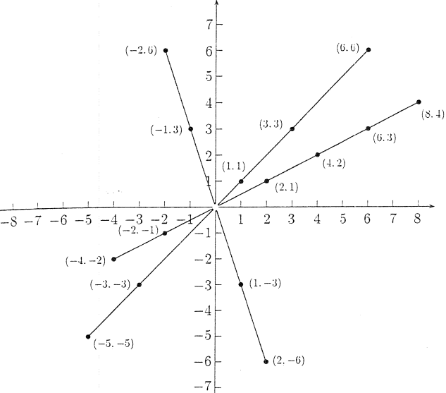

ℚ: Rational numbers
We are able to solve equations such as x + 2 = 0 in ℤ, but we cannot solve 2x = 7. For the purpos of solving equations such as
ax = b, a,b ∈ ℤ, a ≠ 0
We are going to extend the set of integers to that of rational numbers ℚ. As we've done for the construction of integers from natural numbers, consider the cartesian product ℤ x ℤ \{0}, made up by the ordered integer pairs, in which the second element of the pair is different from zero. The following relation is introduced in the set
(a,b) ρ (c,d) ⇔ ad = bc
It is an equivalence relation. We prove only transitivity as the other properties are self-evident. Let (a,b) ρ (c,d), and (c,d) ρ (e,f), it follows
ad = bc, cf = de
by multiplying the first equality on the right by f (≠ 0) and the second equality on the left by b (≠ 0 as well) we obtain by comparison
adf = bde
The commutativity of multiplication and the cancellation law, which hold true in ℤ, (remember that d ≠ 0), allow us to conclude that af = be, that is (a,b) ρ (e,f).
We set
ℚ := ℤ x ℤ \ {0} / ρ
The elements of ℚ are thus equivalence classes that we indicate as
(a,b) All (x,y) that are equivalent to (a,b)
Some of the elements of ℚ, i.e equivalence classes in ℤ x ℤ \ {0} are depicted below.
We define in ℚ the following two operations
(a,b) + (c,d) := (ad+bc,bd)
(a,b) ⋅ (c,d) := (ac,bd)
Observe first, the couples (ad+bc,bd) and (ac,bd) are both in ℤ x ℤ \ {0}, since ℤ \ {0} has no zero divisors. It remains to prove that the operations are well-defined, that is, even if are defined through representative of the classes they do not depend on the particul choice:
Let
(a,b) ρ (a',b') (c,d) ρ (c',d')
We have to prove that
(ad + bc,bd) ρ (a'd'+b'c',b'd'), that is (ad+bc)b'd' = bd(a'd' + b'c')
Remembering that ab' = ba' and cd' = dc', we immediately notice the relation is verified. Analogously for multiplication.
The classes
0 := (0,1) = (0,b)
1 := (1,1) = (a,a)
are nuter elements respectevely for addition and for multiplication. With regards to these operations ℚ is a commutative ring with unit. There is also another important property
(a, b) ⋅ (b, a) = (ab, ba) = (1, 1) ∀(b, a), such that a ≠ 0, b ≠ 0
Notice that (b,a) ∈ ℤ x ℤ \ {0}, since we supposed a ≠ 0. The element (b,a) is known as inverse of the element (a,b).
Definition 3.0. A commutative ring with unit in which every non-null element has a multiplicative inverse is known as field.
We have the following result
Definition 3.1. The set
ℚ = ℤ x ℤ \ {0} / ρ
is a field
We want to prove the following result:
Proposition 3.2. The field ℚ is an extension of ℤ. Moreover every element of ℚ can be written as uv−1, with u,v ∈ ℤ
Proof. We must find in ℚ a copy of ℤ. To this end we notice that the applicaton
φ: ℤ → ℚ
a ↦ (a, 1)
is injective. To prove it (a,1) ≠ (b,1). But that means in particular that (a,1) is not equivalent to (b,1). So we have a*1 ≠ b*1, which is exactly what we wanted.
Moreover the image φ of the sum of two elements of ℤ is the sum of the images (in ℚ), and the same thing for the product. This gurantee us that the image of ℤ in ℚ is the copy of ℤ inside ℚ.
Every element (a, b) ∈ ℚ can be written in the form
(a, b) = (a, 1) ⋅ (a, b)
where (a, 1) ⋅ (a, b) can be mapped through φ to elements of ℤ thus (1, b) is the inverse of an element in ℤ. Every element of ℚ is of the form uv−1, u,v ∈ ℤ, v ≠ 0.□
Since that any element of ℚ can be written in the form uv−1, u,v ∈ ℤ, v ≠ 0, ℚ is known as field of quotients of ℤ. We can write the elements of ℚ in the usual form
(a, b) = (a, 1) ⋅ (a, b) = a / b
that is as fractions.
In partiular, every equation such as
ax = b, a,b ∈ ℤ, a ≠ 0
is solvable in ℚ. We have solved our initial problem.